孖仔帮
公众号ID：twinsbang
关注
【帮主圆圈妈妈】：今年2月中旬，孖仔帮公众号开展了一次双胞胎专用婴儿推车的团购。
《双胞胎睡眠训练不二法宝：婴儿床》
《被问了1000次，双胞胎婴儿车买哪种？》
截团后，不断有宝爸宝妈来询问何时返团。
01
02
03
04
05
滑动查看更多
为了避免负责报名的小助手那边不被信息轰炸，今天先来一波预告哈。
……分……割……线……
目录
一、团品情况
1，双胞胎宝宝专用婴儿床
2，多功能双胞胎婴儿推车（限第八代）
二、团购信息
1、团购时间及数量
2、团品规格
3、团品尺寸
4、团购价格
三、婴儿床详情
1，亮点介绍
2，客照晒图
3，常见问题
四、婴儿车详情
1，亮点介绍
2，测评晒图
3，常见问题
一：团品情况
1，双胞胎宝宝专用婴儿床
2，多功能双胞胎婴儿推车（限第八代）
二、团购信息
1、团购时间及数量
5月18日9:00~19日24:00或售罄
双胞胎婴儿床：10套
双胞胎婴儿推车：50套
2、团品规格
婴儿床颜色：象牙白
婴儿车颜色：魔法黑、银河灰、墨绿色
三种颜色可选
[SVG Icon]
3、团品尺寸
婴儿床：
组合外径127*127CM；
内径120*120CM
拆分外径127*63.5CM；
内径120*60CM
温馨提示：请下单前务必确认好尺寸，避免因卧室尺寸不合适导致不必要的退货纠纷。
婴儿车：
单车尺寸：50*90*102cm
合并尺寸：104*90*102cm
4、团购价格
本期的团购价会比上一期的团购价略有浮动，具体到时候再公布。
三、婴儿床详细信息
1，亮点介绍
这款多功能双胞胎婴儿床是专为双胞胎家庭设计的！
特点一：组合一起成双胞胎床，拆分后可作为单人婴儿床，白天，组合一起，俩宝宝可以一起玩耍，晚上，妈妈照顾一个，爸爸照顾一个，或者奶奶（姥姥）照顾一个，反正看心情DIY另外，单床宽度63.5CM，不同房间随意挪动（其他品牌的双胞胎床可达不到哦！）
特点二：用途广，不担心压箱底！此款婴儿床最大亮点就是可满足双胞胎宝宝们不同阶段的需求。
0~4岁----双胞胎婴儿床；
2~6岁----手工桌、游戏床；
7岁以后---书桌；
7岁以后---休闲椅、沙发；
特点三：真材实料，重70KG，用料最少比其它家多出三分之一，够结实，才能用的久。
特点四：颜值高，作为婴儿床、书桌、沙发、游戏床，它都能为您的家增添色彩，是双胞胎宝宝家庭不二选择。
2，客照晒图
婴儿床没有做测评，直接开团了，受疫情影响，只准备了10张现货，反响不错哈，来一波买家秀吧。
象牙白
象牙白
篇幅有限，没有一一晒出来，如需看更多晒图和视频展示以及想了解产品的更多详情，请复制下方淘口令，打开手淘，直接进入宝贝页面查看。
复制这段话₴h4tI1MtnwOd₴
3，常见问题
1Q：什么品牌？
A：品牌名称：俩贝比
2Q：婴儿床可以用到多大？
A：床内径长度是1.2米，一般可以睡到3到4岁。
3Q：团购价包含配套的床品吗？
A：不包含，团购价包含婴儿床+椰棕床垫，其他配套床品需另购。
4Q：婴儿床带床垫吗？
A：每套床配2张椰棕床垫。
5Q：团购价是指一张床的价格还是两张床一起？
A：两张床一起。
6Q：婴儿床当沙发用，承重多大？
A：婴儿床的床板1cm厚，3*3的床板实木横梁，4个固定位，结构上很牢固，同时我们也测试过，承受两三个成人的重量没有问题。
7Q：松木做的婴儿床，味道大吗？
A：味道不大，收货后放置1~2个星期即可淡去。
8Q：床的高度可调节吗？
A：可以，有18级高度调节，可满足不同需求。
四、婴儿车详细信息
1，亮点介绍
这款多功能双胞胎婴儿推车基本上包含了市面上并排双胞胎婴儿推车的所有功能，满足了双胞胎家庭的所有幻想。
特点一：轻松组合拆分，遛一个娃还是遛两个娃，你说了算！
特点二：一键自动折叠，抱着宝宝也能收车！
特点三：配提篮，是手提摇篮，也是汽车安全座椅，新生宝宝外出更安全！
特点四：质量轻，单车质量6KG，妈妈奶奶都提的动！
特点五：折叠后体积小，单车体积50*25*72，外出好携带！
2，测评结果
婴儿车开团前邀请了三位测评者参与测评，他们分别是：1位宝爸（宝宝未出生），1位宝妈（宝宝未满2个月），1位宝妈（宝宝53天）
第一位宝妈的测评@矫情妹
宝宝53天
第二位宝爸的测评@My live
第三位宝妈的测评@馥香
宝宝未满2个月
此外，还有上期购买了婴儿车后在商家店铺上晒出的好评，我精选了一些，给大家分享下哈！
篇幅有限，没有一一晒出来，如需看更多晒图和视频展示以及想了解产品的更多详情，请复制下方淘口令，打开手淘，直接进入宝贝页面查看。
覆置这行话¢Sdhj1Mtnuqp¢
3，常见问题
1Q：什么品牌？
A：品牌名称：Basinng
2Q：可以用到多大？
A：提篮是专为新生儿准备的，可以用到1岁，推车可以用到五六岁。
3Q：靠背最大调节角度是多少？
A：最大调节角度是175°
4Q：团购价是指一辆车的价格还是两个车一起
A：两个车一起。
5Q：收车方便吗？一键折叠有没有防误触？会不会夹到宝宝？
A：收车方便，一键折叠的开关是双重安全设计，必须同时完成2个动作才能启动（要手指推着上面 再按压下面才能收）如图所示▼
6Q：靠背有背板吗？还是就是一层布？
A：有底板，承托力强。
7Q：提篮可以同时充当安全座椅吗？
A：提篮可作为新生儿在汽车上的安全座椅，可以用到1岁。
温馨提示：提篮可以放在车上当安全座椅，但有宝爸宝妈反馈，安装在车上会摇晃，需要手扶着，若喜欢经常带着小宝宝外出游玩或需长途旅行的，建议买专业的婴儿安全座椅，若只是偶尔外出溜达或者家用充当睡篮的，那绝对是不二首选哈。
8Q：提篮尺寸多大？重量多少？
A：单个提篮重量约2.5KG，尺寸70*35cm，如图所示▼
9Q：团购价包含其他配件吗？
A：有，包含蚊帐，凉席，扶手，收纳袋，奶瓶架等
10Q：双车组合后的尺寸和重量是多少？可以进电梯吗？
A：双车的重量是12KG，104cm*90cm*102cm，一般电梯可能进不去，如图所示▼
11Q：座位高度可以调节吗？
A：高度固定，不可调节，如图所示▼
12Q：双向设计吗？
A：如果提篮安装在推车上，提篮是可以变换方向的，但推车不支持变换方向。
13Q：提篮可以平躺吗？
A：不能，是有一定角度的，如图所示▼
14Q:车子折叠后，可以登机吗？
A：可以，单车折叠后尺寸是50*25*72cm
15Q：布料可以拆洗吗？
A：可拆洗。
温馨提示：据前期团购的宝妈们反馈，暗扣有点不好使，拆装时需要使劲按才行，这点小BUG已经向品牌商反馈，希望后续得到改良。
[SVG Icon]
[SVG Icon]
对两个团品还有哪些疑虑呢？咱去团购群里聊吧，你想不到的问题，其他人可能已经帮你解决好了，扫码下方二维码，即可进入双胞胎婴儿车和婴儿床团购群。

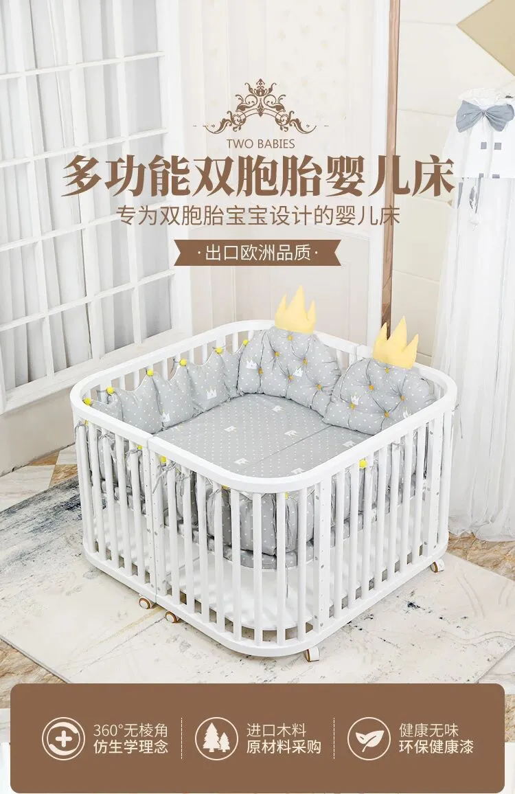
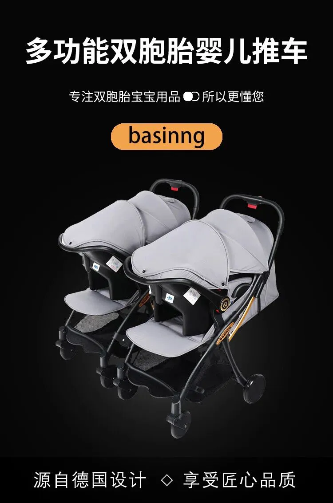
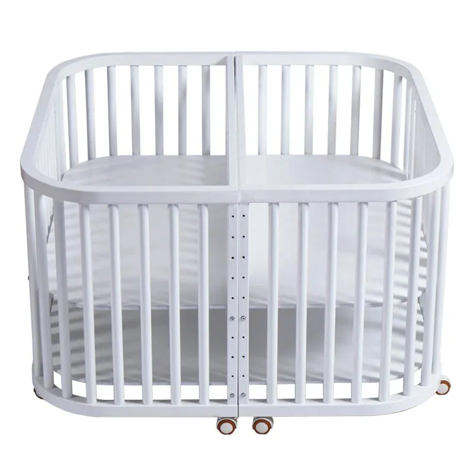
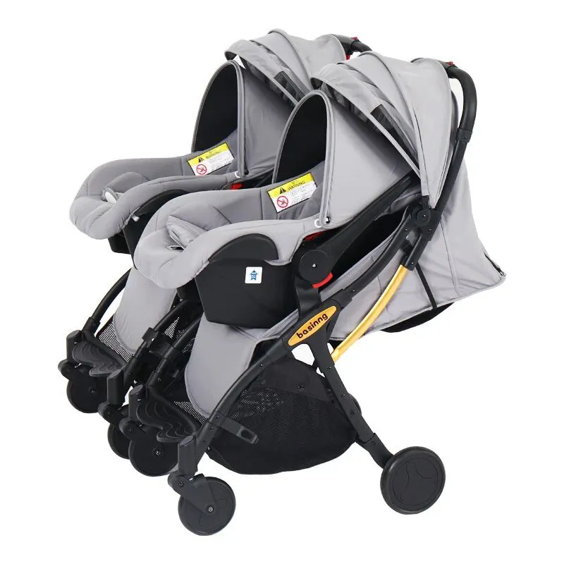
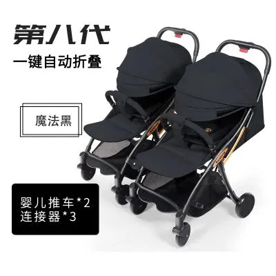
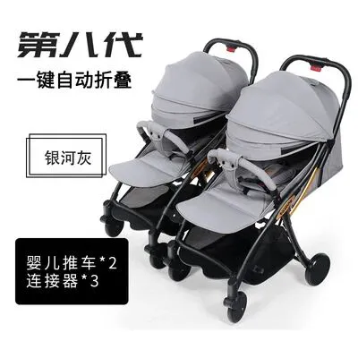
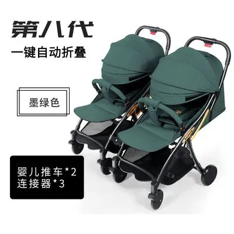
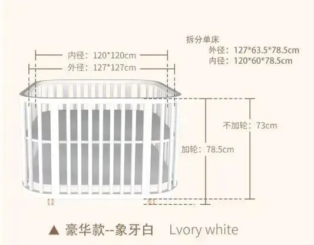

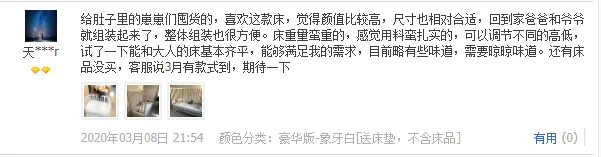
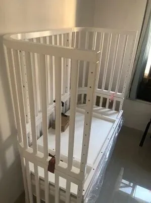
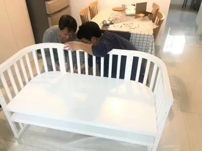
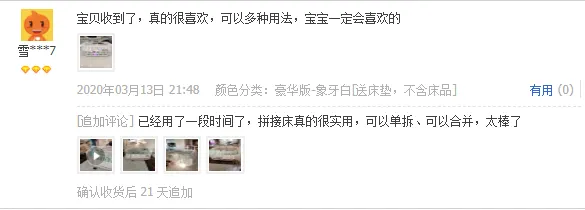
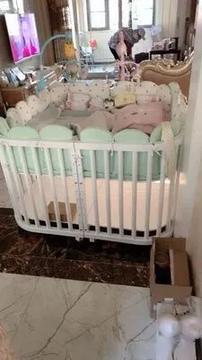
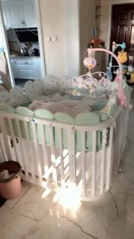
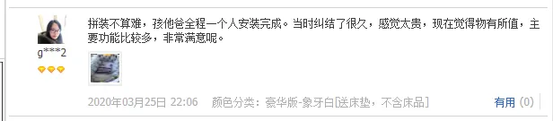
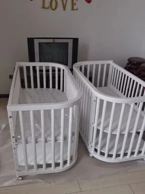
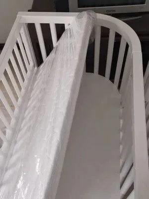
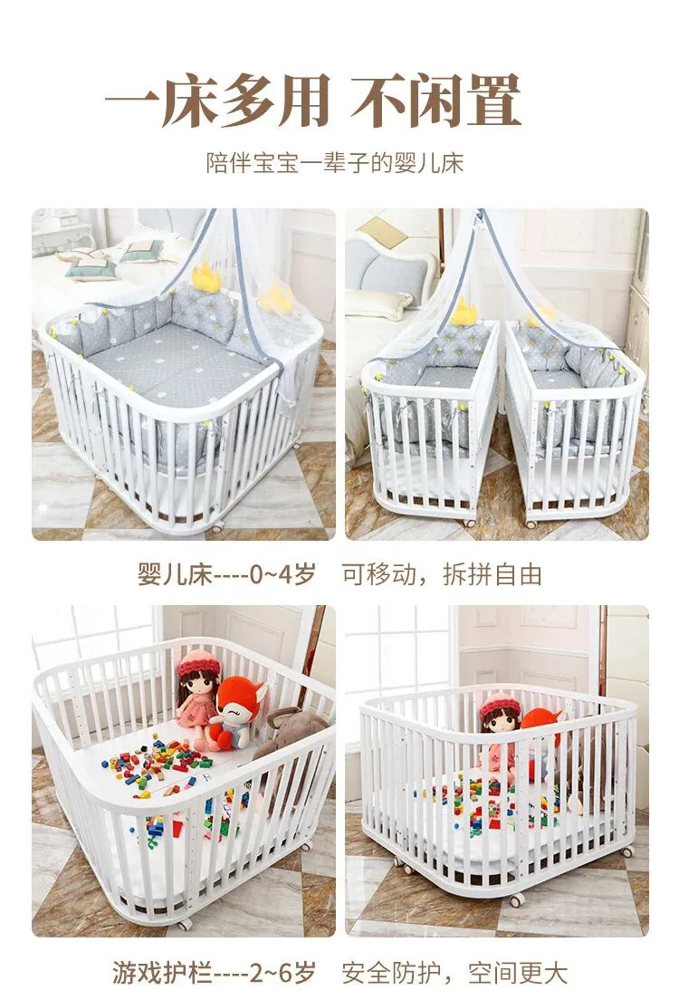
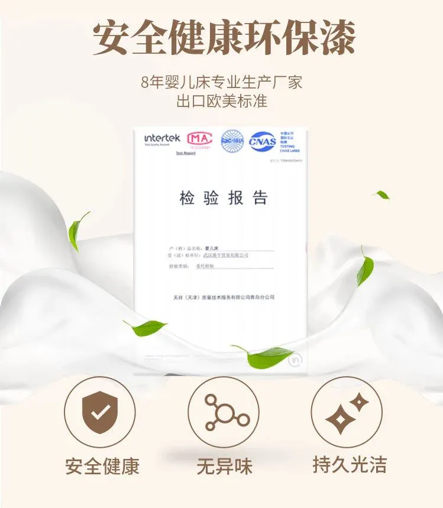
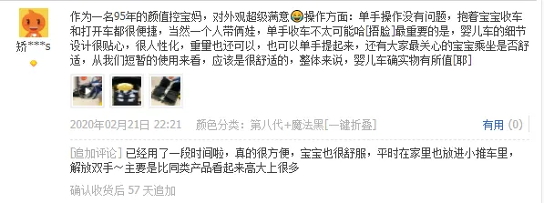

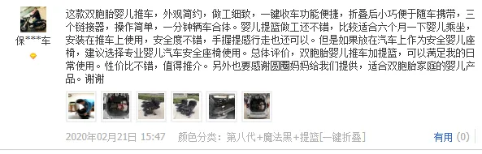
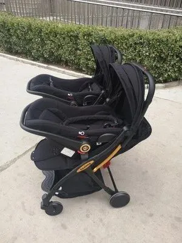


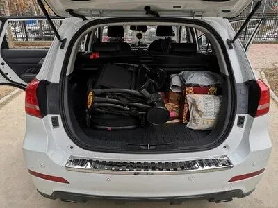


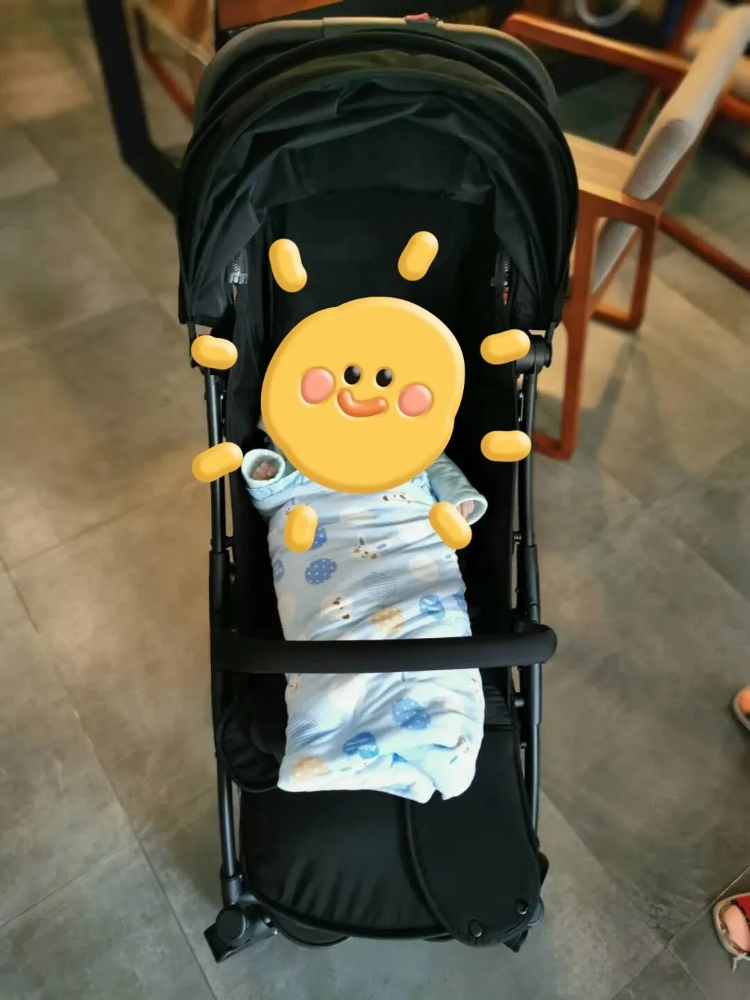


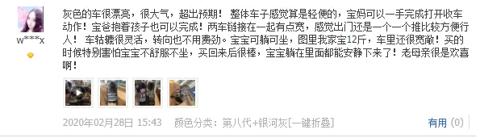
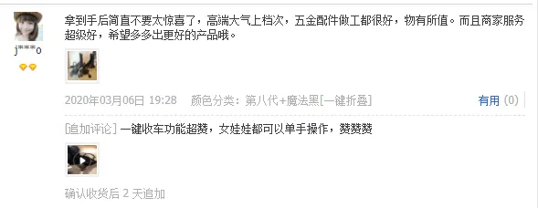
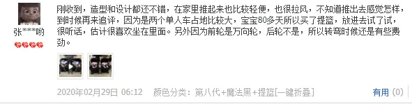
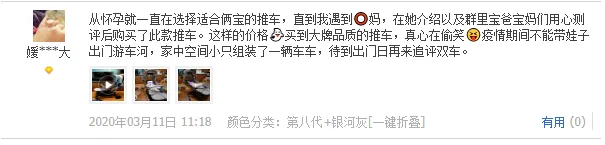

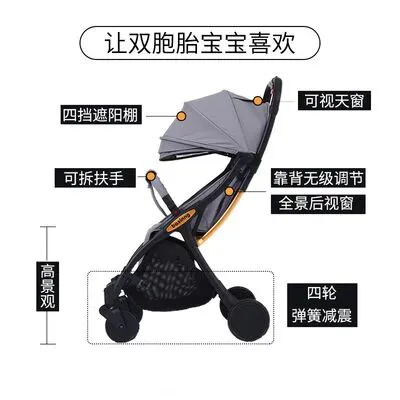

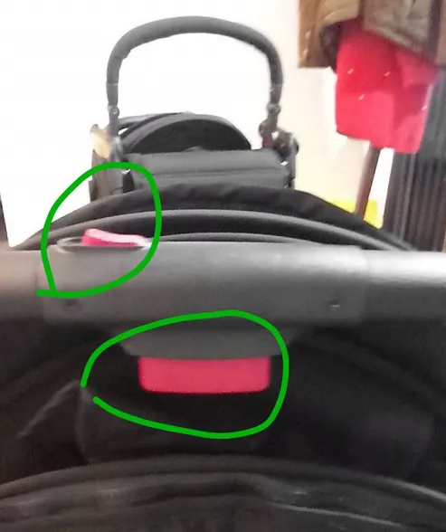
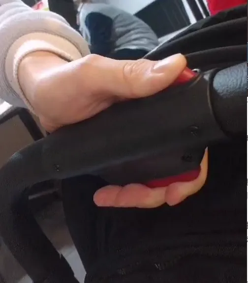
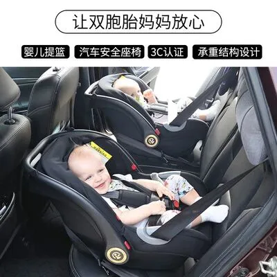

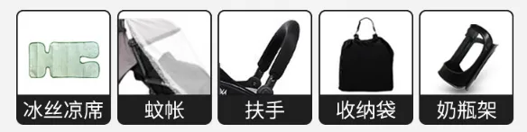

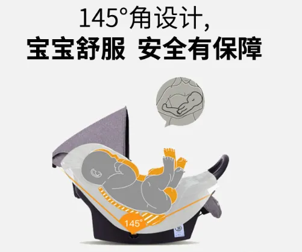